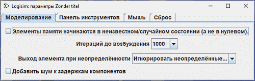

Параметры проекта
Logisim-evolution поддерживает две независимые категории конфигурационных параметров: глобальные настройки приложения (Preferences) и локальные параметры проекта (Options). Глобальные настройки приложения применяются ко всем сеансам работы и пользовательскому интерфейсу в целом, тогда как параметры проекта сохраняются непосредственно в файле схемы (.circ) и действуют исключительно в рамках текущего открытого проекта. В данном разделе рассматривается работа именно с локальными параметрами проекта.
Доступ к настройкам текущего проекта осуществляется через главное меню | Проект | → | Параметры... | (Project → Options). Данная команда открывает соответствующее диалоговое окно, разделённое на несколько тематических вкладок.

Ниже представлено подробное описание каждой из доступных конфигурационных вкладок:
Далее: Вкладка «Моделирование».